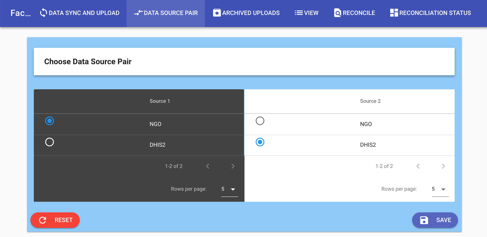
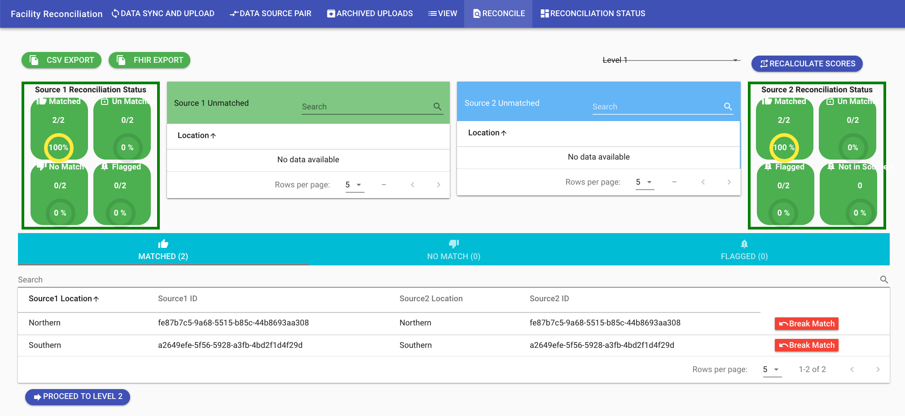
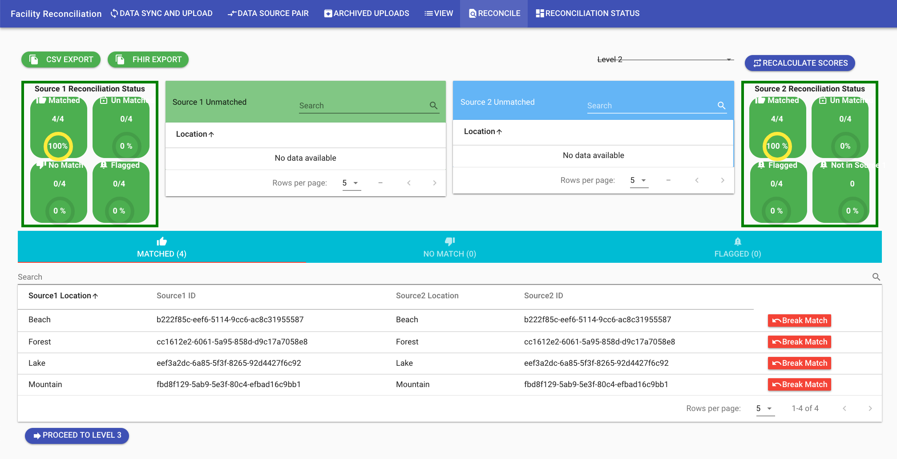
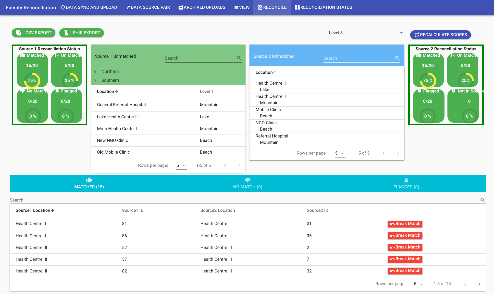
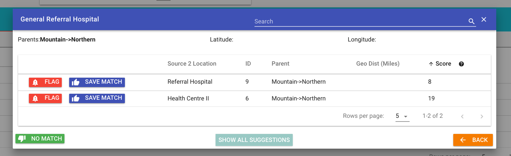
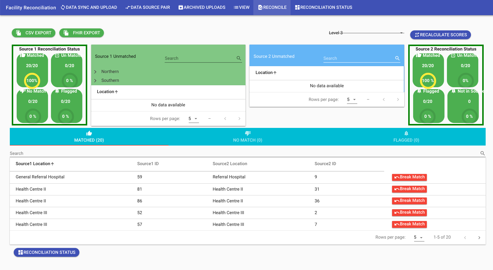

Quick Start¶
Download the example data¶
- Go to the example workbook for Fakeland Health Facilities data.
- There are two worksheets inside (see the tabs at the bottom), one for Source 1 NGO and one for Source 2 DHIS2. These are fake data for use in the tool.
- Download CSV files for both worksheets to your computer by clicking under the File menu and choosing Download as: Comma-separated values
- Save the files to your computer in an easily accessible folder.

Upload Data¶
- Go to the reconciliation tool from the site: https://facilitymatch.org and click DEMO. You will be shown a disclaimer. If you agree, then click to continue.
- On the hosted version, login using demo:demo for user:password.
- On the site, choose Add Source in the top center of the page and select Upload.

- Name the upload NGO (you can name it anything you wish) and click ‘Upload CSV.’ Select the Fakeland Health Facilities - Source 1 NGO file from where you saved it on your computer.
- Click CONTINUE. The data will be loaded into the system.

- You will be in a new dialog that asks you to assign headers for facility name, facility ID code, and administrative levels. Please select the correct headers from the dropdown menu as indicated in the screenshot below.

- Click the blue UPLOAD button.
- Repeat the above steps for uploading data but this time call the upload DHIS2 and choose the file Fakeland Health Facilities - Source 2 DHIS2 file on your computer.
- You should now have two data sources.

# Pair Sources for Reconciliation
- Go to the Data Source Pair tab and select both data sources. The data source you select under “Source 1” is the target (the one you want to fix). The data source you select under “Source 2” is the one that is the leader that you want to eventually merge your data with.
- Choose NGO as Source 1 and DHIS2 as Source 2.

- Click SAVE and you will be taken to the reconciliation screen.
Reconciliation¶
- There are only two regions (the top administrative level in the fakeland data). They are automatically matched. The status wheels labeled “Matched” indicate that 2 of 2 regions have been matched. In the bottom portion of the screenshot below, you can also see that for Level 1 there is 100% match, as the two locations in Source 1 match the two locations in Source 2. Select Proceed to Level 2.

At Level 2, the districts will automatically be matched.

- Click Proceed to Level 3.
- At Level 3, some facilities will not match.
- There is a list of unmatched facilities in the light green box for Source 1.

- Select one of the facilities, like General Referral Hospital.
- A pop-up dialog will let you choose which facility to match it to.

- Select the most appropriate match, in this case it is Referral Hospital, and click SAVE MATCH.
- Go through the unmatched facilities in Source 1, select and save the best matches. One you are done, you will see:

- The Source 1 Reconciliation Status, in the top left-hand status box, should be 100%.
Export a Reconciliation Report¶
- On the top left of the reconciliation tab there is an option to output either a FHIR-based report of the final reconciled dataset or a CSV of what matched and did not match in either dataset. Choose CSV Export. You will receive three files of matches and unmatches.